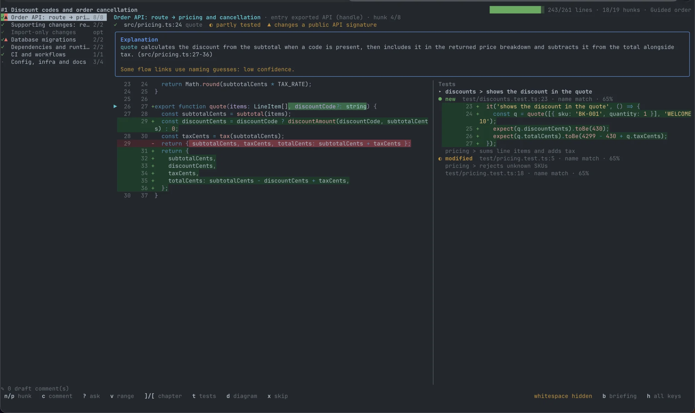
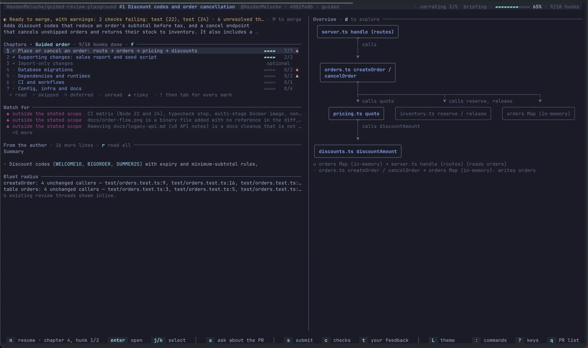
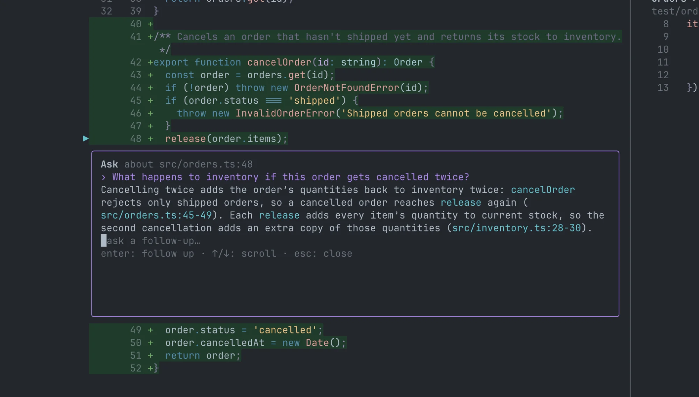

A diff lists files alphabetically. Code runs from an entry point through the functions it calls. Guided Review turns a change into a tour that follows that path: chapters walk each route, command, or handler through the changed code, with its tests beside it. It works on a pull request, your own branch, or uncommitted work. Draft comments as you go and post them as one GitHub review.
$ npm install -g @haydenmeloche/guided-review
See what's new in the latest release
$ gr # pick a PR waiting for your review $ gr review 1234 # or owner/repo#1234, or a PR URL $ gr preview # tour your own branch before opening a PR $ gr review --no-agent # static analysis only, no model calls

Every tour opens with what the PR does, what the author said, the overview diagram, and chapters in a recommended reading order.

Select code and press ?. Answers cite the files and lines they come from, and follow-up questions keep the thread.

Chapters start at entry points such as routes, commands, and handlers and follow the changed code in reading order. You can also sort by risk, size, or file.
Linked test cases appear next to the hunks they exercise, and possible test gaps are flagged.
Mark hunks read, skipped, or deferred, and pick up where you left off. Your reading state can carry over to a new push.
Comments stay local until you post them as a single GitHub review, with code suggestions and @ mentions. Nothing posts until you confirm.
See only the hunks that changed since your last pass, and check whether your earlier comments were addressed.
Ask the model about a selection, a chapter, or the whole PR without leaving the review. Follow-up questions keep the thread.
Use real PRs as lessons: walk from the entry point to the functions it reaches, with the tests that cover them.
Run gr preview to tour your branch before you open a PR and see your change the way a reviewer will.
Some changes are easy to read in a diff but hard to judge from one. These get their own chapters, and the explanation says what the change means instead of what it edits.
Table locks and rewrites, possible data loss, whether it can be rolled back, backfills, and whether code must deploy before or after it.
Which OpenAPI, protobuf, GraphQL, or Avro changes break existing clients and which are additive, and the clients in the repo that rely on them.
For an upgrade, name old → new and the highlights in between: features, breaking changes, and security fixes. For a new or removed package, what it is and where it is used.
One summary of indirect changes: major version jumps, notable packages added or removed, and known security fixes, without paging through thousands of lines.
Terraform, Kubernetes, and Helm resources created, destroyed, or replaced, and changes to IAM, network exposure, scaling, and secrets.
New triggers, permissions, and secrets, plus risky patterns such as pull_request_target, untrusted input in scripts, and actions not pinned to a SHA.
git.
ripgrep (rg) is optional; the agent's repository search uses it. macOS and Linux (including WSL) are supported.
gh auth login.
No GitHub CLI? gr config can use a personal access token instead, including for GitHub Enterprise Server.
gr config.
Claude Code and Codex use your existing login, so neither needs an API key. Cursor uses a Cursor API key.
gr and pick a PR. Press h in a review to see the keys.
Use different models for the briefing, chapter narration, and Q&A. PR content is treated as untrusted: the model gets read-only access to the PR's worktree, and Guided Review has no telemetry. See data, privacy, and security.
Commit a .guided-review.json at the repository root so everyone who reviews the repo gets the same rules. Run gr config --repo to create or edit it.
{
"kinds": [{ "pattern": "src/gen/**", "kind": "generated" }],
"testPatterns": ["**/*.it.ts"],
"checklists": [{ "pattern": "db/**", "items": ["Migrations are reversible"] }]
}
kinds
Reclassify files as logic, test, config, mechanical, generated, or vendored. Generated and vendored files
collapse to a one-line summary. Only logic and config files move into the migration, API, dependency, infrastructure, and CI chapters.
testPatternsAdd test-file globs on top of the built-in ones, such as integration-test suffixes your repo uses.
checklistsAttach review items to chapters that touch matching paths. The agent pre-checks each item, and you confirm it with i.
Rules come from the PR's merge base, not the PR itself, so a PR can't reclassify its own files. A PR that changes the config gets flagged.
See the full reference and example configs for TypeScript, Go, Python, and Java repos.
Build the tour once in GitHub Actions and post it to the PR. Reviewers then open it without spending their own model calls.
- uses: actions/checkout@v7
with:
fetch-depth: 0
- uses: HaydenMeloche/guided-review@v0.1.0
with:
provider: anthropic
env:
ANTHROPIC_API_KEY: ${{ secrets.ANTHROPIC_API_KEY }}
See the full workflow in the CI guide.
gr install-claude-command adds a /guided-review command to Claude Code, and gr install-codex-skill adds a skill to Codex. Each opens a preview of your
local changes, uncommitted work included, in a new terminal window.